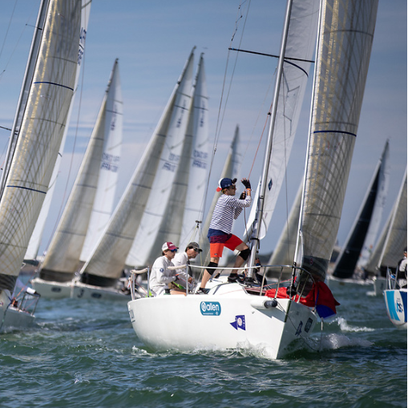
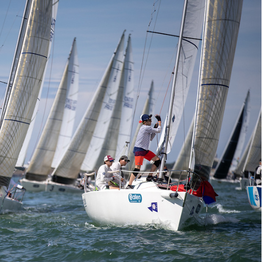

À Propos de Moi
Depuis mon plus jeune âge, l’esprit d’équipe, la rigueur et la volonté de repousser mes limites m’ont toujours guidé. Que ce soit dans mes activités sportives, notamment la voile et le vélo, ou dans les défis professionnels, je reste déterminé à atteindre mes objectifs, en surmontant les obstacles avec autonomie et persévérance.
Valeurs Clés
Esprit d'équipe
En tant que skipper sur Open 5.7 et équipier multi-poste J80, j'ai appris à naviguer en équipe dans des conditions exigeantes. Ma capacité à communiquer efficacement, à coordonner les efforts et à créer une dynamique positive au sein d'un équipage a toujours été essentielle à la réussite collective.
Résilience & Persévérance
Que ce soit en voile, en course à pied ou en vélo, je ne recule jamais devant un défi. Chaque objectif que je me fixe, je le poursuis avec détermination jusqu'à l'atteindre. Face aux difficultés, je préfère trouver des solutions par moi-même avant de solliciter de l’aide.
Leadership & Organisation
En 2024, j'ai organisé la participation de mon école à la Régate des Minots à Marseille, une compétition que nous avons remportée. Mon rôle a consisté à sélectionner les élèves, organiser leurs entraînements et assurer une préparation optimale en collaboration avec un moniteur. Cette expérience a renforcé mes compétences en leadership et gestion d'équipe.
Gestion de la pression
La participation à des compétitions d'envergure comme le Spi Ouest France (3 éditions), le championnat de France de voile habitable ou le championnat du monde de J80 m'a permis de développer une grande capacité à gérer le stress et à faire face aux imprévus. J'ai appris à rester concentré et à prendre des décisions rapides dans des environnements compétitifs.
Régate des Minots
En 2024, les étudiants de la plateforme ont remporté la Régate des Minots, un événement marquant qui a mis en avant notre préparation et notre esprit d'équipe. Cet événement a non seulement permis aux participants de se mesurer à d'autres équipes, mais également de renforcer les liens entre les membres de notre école. Pour en savoir plus, consultez l'article complet sur La Plateforme.
.jpg)
.jpg)
Expériences Significatives
Skipper sur Open 5.7 et J80
Ces expériences m'ont permis d'affiner mes compétences de leadership tout en renforçant mon esprit d’équipe dans des environnements compétitifs et exigeants.


Voile Militaire
En participant à des régates militaires comme le Grand Prix de l'École Navale ou encore le championnat du monde de J80, j’ai approfondi ma maîtrise de la gestion de la pression, la compétition de haut niveau et la cohésion d’équipe.
 

Vélo et Trail
Lorsque je ne suis pas sur l'eau, je me consacre au vélo et au trail. Ces activités me permettent de me fixer des objectifs personnels ambitieux, tout en travaillant sur ma résilience et ma capacité à surmonter les difficultés.